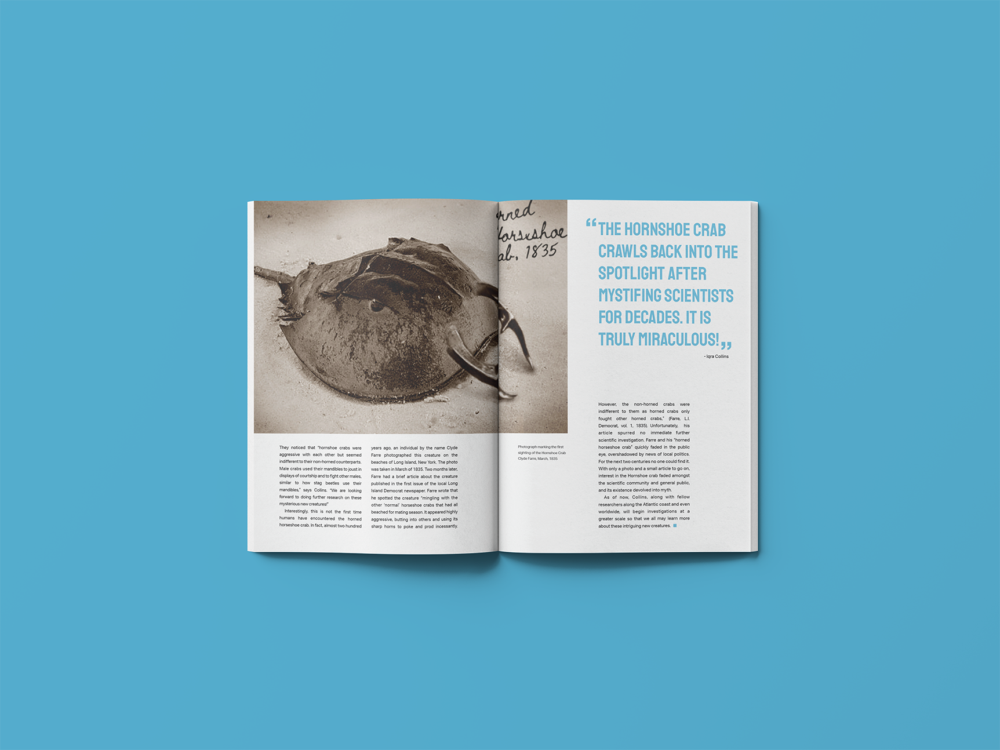
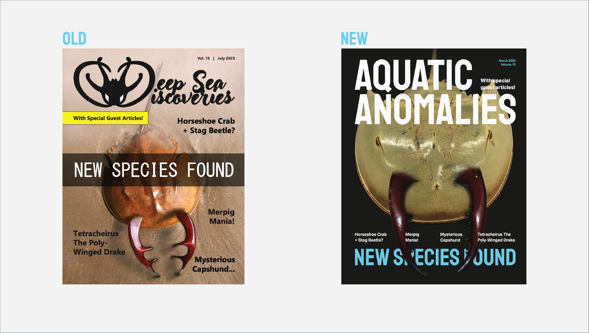
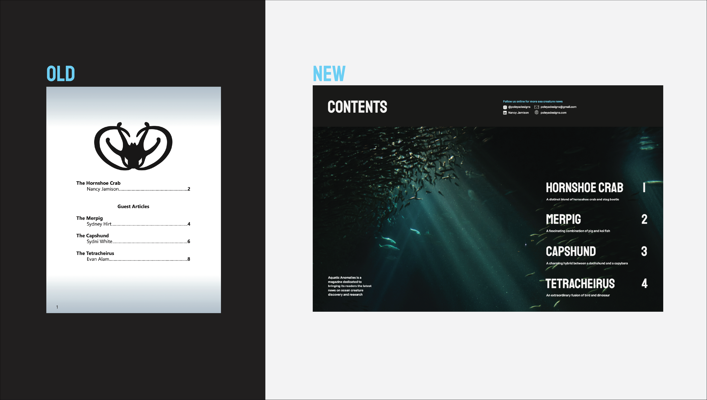
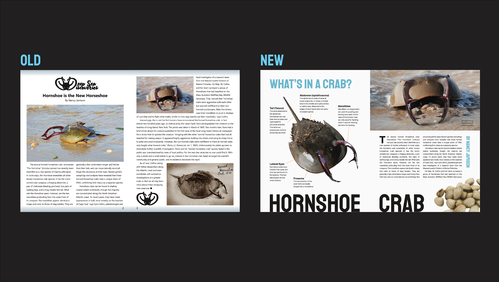
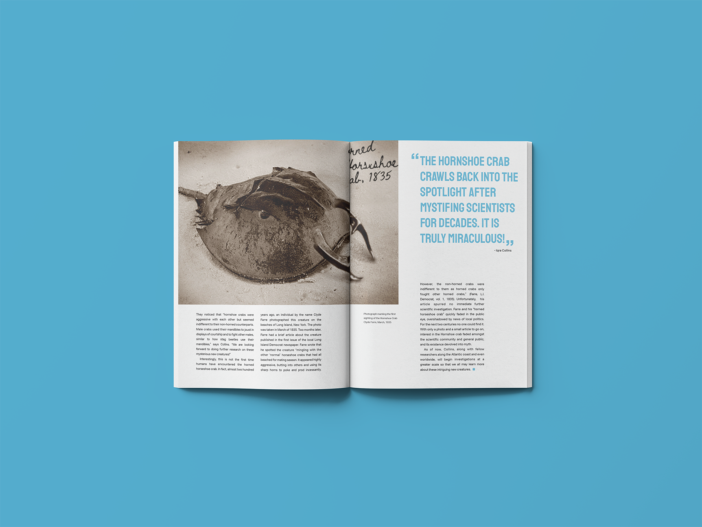
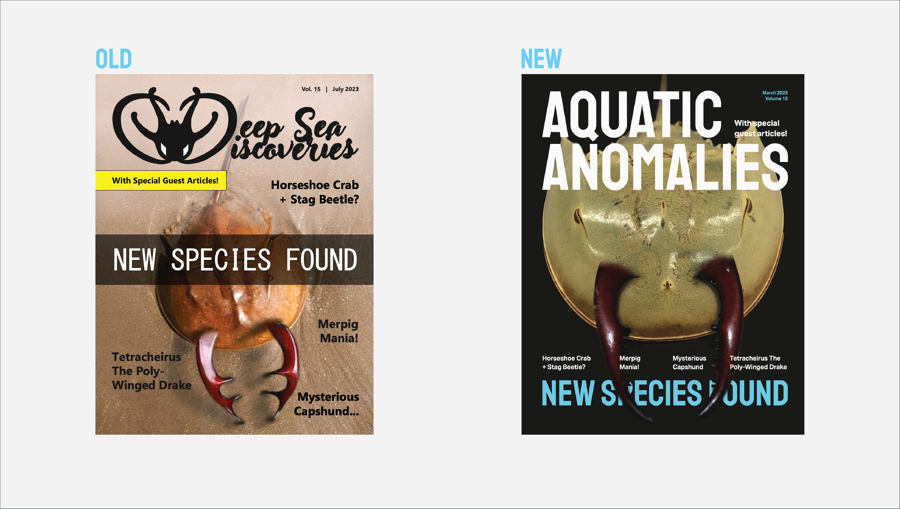
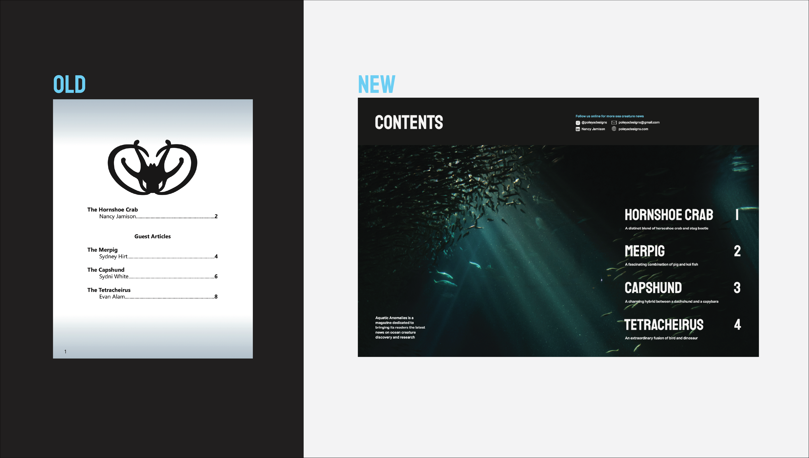
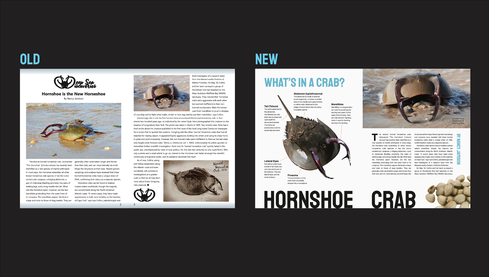

Aquatic Anomalies
2025
Editorial, 8.5 x 11 in.
Aquatic Anomalies is a redo of my first ever graphic design project as a student at George Mason University.
The original project had me create a fantastical creature that combined two existing animals. I chose to combine a horseshoe crab and a stag beetle. I also had to design a fictional science magazine that "reported" on my creature.
Two years later, I was tasked with redesigning a project of my choice that was already in my portfolio. I chose to do this project because 1.) it was visually unpleasing nor engaging for the reader, and 2.) it would bring me full circle in my design studies at Mason.
Included are photos of the original next to its newer version. I began this project by redoing the magazine's visual identity, including fonts, typpography, name, and color palette. Next, I edited old images and made new ones to replace previous poorly-photoshoped "hornshoe crab" photos. Finally, I designed a whole new, visually dynamic layout following design principles that I had learned over the years.
 






